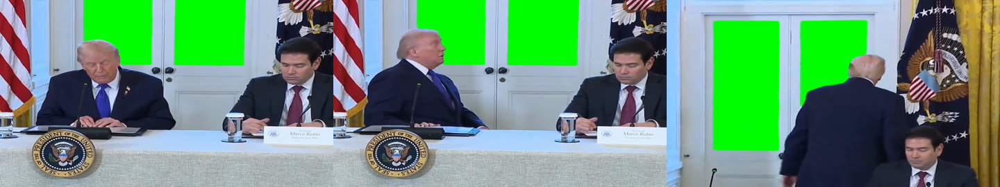
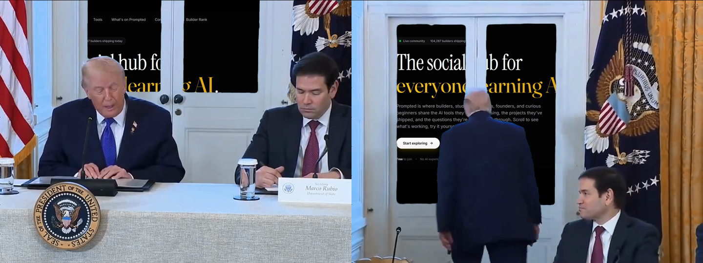
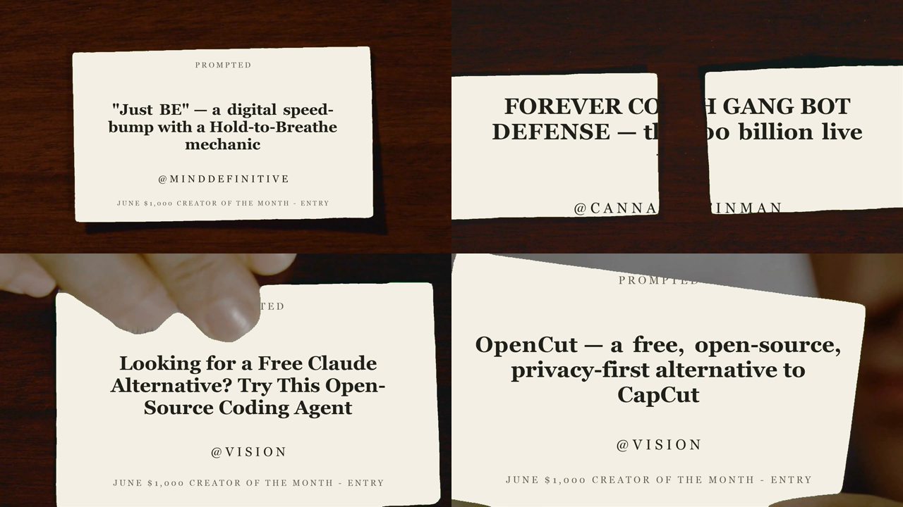
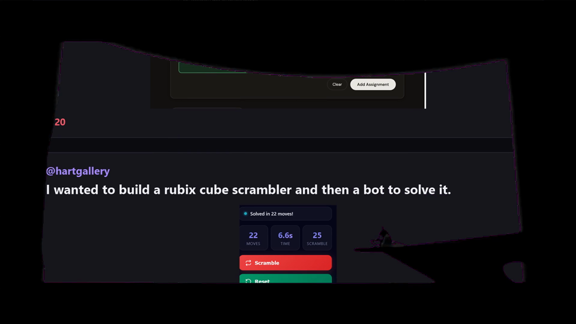

How to turn any greenscreen meme video + a user's image into a finished meme — entirely in code, no video editor. This document is written for a Claude agent to read and then reproduce the workflow for its own user.
You take an existing greenscreen meme clip — a video where someone holds up / looks at / reacts to a green rectangle (a business card, a phone, a sign, a TV) — and you automatically replace the green area with the user's own content on every frame. The result is a meme where the subject appears to be holding the user's image, post, ad, leaderboard, etc.
The key idea: this is chroma keying done in plain code. You never open editing software. You detect green pixels, swap them for the user's image, despill the edges, and re-encode. Once the pipeline exists, a new meme is just "new template + new image + run."
Real frames from the pipeline. The green is detected and replaced per-frame — nothing here was keyed by hand.




| Tool | Role | Notes |
|---|---|---|
ffmpeg | Frame extract + re-encode | The only external dependency. ffmpeg -version to confirm. |
PowerShell + .NET System.Drawing (GDI+) | Card rendering, green detection, compositing, despill | Ships with Windows. No installs, no paid software. |
| JSON | Content data (titles, usernames, assignments) | So swapping content is a data edit, not a code edit. |
On macOS/Linux the same logic ports to Python + Pillow/NumPy — the algorithm is identical, only the drawing API changes. The reference implementation below is PowerShell because that's what the original was built on.
A raw screenshot often looks muddy when shrunk onto a tiny business card. Rendering a clean, high-contrast card from data reads far better. Keep a cards.json of what to draw, then draw each with GDI+. This is also how you make the "Prompted entry" cards.
# cards.json — one object per card [ {"file":"card_01.png", "username":"shiroku_official", "title":"Shiroku — anomaly detection for SMBs"}, {"file":"card_02.png", "username":"minddefinitive", "title":"Fashion w/ Motion & Vortex Ignition"} ]
# render_cards.ps1 — bone card, serif title, @username, footer Add-Type -AssemblyName System.Drawing $m = "C:\path\to\project" $cards = Get-Content "$m\cards.json" -Raw | ConvertFrom-Json $W = 1400; $W; $H = 800 $bone = [System.Drawing.Color]::FromArgb(245,241,228) $ink = [System.Drawing.Color]::FromArgb(33,33,28) $soft = [System.Drawing.Color]::FromArgb(95,92,80) function Spaced([string]$s){ ($s.ToUpper().ToCharArray() -join ' ') } # L E T T E R S P A C I N G $titleFont = New-Object System.Drawing.Font("Georgia", 52, [System.Drawing.FontStyle]::Bold) $userFont = New-Object System.Drawing.Font("Georgia", 34, [System.Drawing.FontStyle]::Regular) $center = New-Object System.Drawing.StringFormat $center.Alignment = 'Center'; $center.LineAlignment = 'Center' foreach($c in $cards){ $bmp = New-Object System.Drawing.Bitmap($W, $H) $g = [System.Drawing.Graphics]::FromImage($bmp) $g.SmoothingMode = 'AntiAlias'; $g.TextRenderingHint = 'AntiAliasGridFit' $g.Clear($bone) $inkB = New-Object System.Drawing.SolidBrush($ink) $g.DrawString($c.title, $titleFont, $inkB, (New-Object System.Drawing.RectangleF(80,180,($W-160),380)), $center) $g.DrawString((Spaced "@$($c.username)"), $userFont, $inkB, (New-Object System.Drawing.RectangleF(0,575,$W,60)), $center) $g.Dispose() $bmp.Save("$m\cards\$($c.file)", [System.Drawing.Imaging.ImageFormat]::Png) $bmp.Dispose() }
Skip this entirely if the user just wants their own raw image on the green — point the compositor at that image instead.
# Make a frames folder and dump every frame as a numbered PNG. # Record the FPS — you need it to rebuild and to convert frame#→time. ffmpeg -i meme.mp4 -vsync 0 frames_in\frame_%05d.png # Get exact FPS / dimensions: ffprobe -v error -select_streams v:0 -show_entries stream=r_frame_rate,width,height -of csv=p=0 meme.mp4
23.976 (24000/1001) or 30 fps. Use the exact rate on re-encode or audio drifts. Keep frames as PNG (lossless) — JPEG would chew up the clean chroma edges.
A pixel is "true green" when its green channel clearly dominates red and blue. The thresholds below are the battle-tested ones. Scan every pixel; the min/max X and Y of green pixels give you the bounding box where the content goes on that frame.
// "core" green — used to find the box and to fill bool IsGreen(byte r, byte g, byte b) { return g > 100 && g > r + 60 && g > b + 60; }
Two looser tiers are used during compositing (see Step 5): g>80 && g>r+30 && g>b+30 = "still green, replace it," and g>r+12 && g>b+12 = "faint green fringe, despill it."
Only needed when the green appears in bursts (card shown, hidden, shown again) or when a scene shows two green regions at once. Logic:
# segment build (PowerShell): merge gaps <= 12, drop runs < 6 $segments = @(); $segStart = -1; $lastGreen = -1 for($i=0; $i -lt $frames.Count; $i++){ if($frames[$i].green){ if($segStart -lt 0){ $segStart = $i } elseif($i - $lastGreen -gt 12){ $segments += [pscustomobject]@{ start=$segStart; end=$lastGreen }; $segStart = $i } $lastGreen = $i } } if($segStart -ge 0){ $segments += [pscustomobject]@{ start=$segStart; end=$lastGreen } } $segments = @($segments | Where-Object { ($_.end - $_.start) -ge 6 })
For each frame with a green box, scale the content image to cover the box (centered), then walk the box: green core pixels become content pixels; faint fringe pixels get their green channel pulled down to max(r,b) so no green halo survives.
// inside the bounding box [minX..maxX] x [minY..maxY]: for (int y = minY; y <= maxY; y++) for (int x = minX; x <= maxX; x++) { int i = y*stride + x*4; byte b = px[i], g = px[i+1], r = px[i+2]; if (g > 80 && g > r+30 && g > b+30) { // green core → content int ai = (y-minY)*adStride + (x-minX)*4; px[i]=apx[ai]; px[i+1]=apx[ai+1]; px[i+2]=apx[ai+2]; } else if (g > r+12 && g > b+12) { // green fringe → despill px[i+1] = Math.Max(r, b); } }
s = max(boxW/imgW, boxH/imgH) and center. This guarantees the content fills the whole green area with no background bleeding through, even if aspect ratios differ. Pad with a color that matches the content background (bone for cards, black for ad/video screens).
The complete, working compositor (single-region) — adapt paths and the content image:
Add-Type -AssemblyName System.Drawing $src = @' using System; using System.Drawing; using System.Drawing.Imaging; using System.IO; using System.Runtime.InteropServices; public static class CardComposite { public static int Process(string inDir, string outDir, string contentPath) { var files = Directory.GetFiles(inDir, "*.png"); Array.Sort(files); int done = 0; using (var ad = new Bitmap(contentPath)) foreach (var f in files) { using (var raw = new Bitmap(f)) using (var bmp = new Bitmap(raw.Width, raw.Height, PixelFormat.Format32bppArgb)) { using (var gc = Graphics.FromImage(bmp)) gc.DrawImage(raw, 0, 0, raw.Width, raw.Height); var rect = new Rectangle(0,0,bmp.Width,bmp.Height); var bd = bmp.LockBits(rect, ImageLockMode.ReadWrite, PixelFormat.Format32bppArgb); int stride = bd.Stride; byte[] px = new byte[stride*bmp.Height]; Marshal.Copy(bd.Scan0, px, 0, px.Length); int minX=int.MaxValue,minY=int.MaxValue,maxX=-1,maxY=-1; for (int y=0; y<bmp.Height; y++){ int off=y*stride; for (int x=0; x<bmp.Width; x++){ int i=off+x*4; byte b=px[i],g=px[i+1],r=px[i+2]; if (g>100 && g>r+60 && g>b+60){ if(x<minX)minX=x; if(x>maxX)maxX=x; if(y<minY)minY=y; if(y>maxY)maxY=y; } } } if (maxX>=0 && maxX-minX>20 && maxY-minY>20) { int bw=maxX-minX+1, bh=maxY-minY+1; using (var adScaled = new Bitmap(bw,bh)) { using (var g2 = Graphics.FromImage(adScaled)) { g2.Clear(Color.Black); // pad color = content bg g2.InterpolationMode = System.Drawing.Drawing2D.InterpolationMode.HighQualityBicubic; double s = Math.Max((double)bw/ad.Width, (double)bh/ad.Height); int aw=(int)(ad.Width*s), ah=(int)(ad.Height*s); g2.DrawImage(ad, (bw-aw)/2, (bh-ah)/2, aw, ah); } var abd = adScaled.LockBits(new Rectangle(0,0,bw,bh), ImageLockMode.ReadOnly, PixelFormat.Format32bppArgb); byte[] apx = new byte[abd.Stride*bh]; Marshal.Copy(abd.Scan0, apx, 0, apx.Length); for (int y=minY; y<=maxY; y++){ int off=y*stride; for (int x=minX; x<=maxX; x++){ int i=off+x*4; byte b=px[i],g=px[i+1],r=px[i+2]; if (g>80 && g>r+30 && g>b+30){ int ai=(y-minY)*abd.Stride+(x-minX)*4; px[i]=apx[ai]; px[i+1]=apx[ai+1]; px[i+2]=apx[ai+2]; } else if (g>r+12 && g>b+12){ px[i+1]=Math.Max(r,b); } } } adScaled.UnlockBits(abd); } } Marshal.Copy(px, 0, bd.Scan0, px.Length); bmp.UnlockBits(bd); bmp.Save(Path.Combine(outDir, Path.GetFileName(f)), ImageFormat.Png); done++; } } return done; } } '@ # force-load GDI+, then reference every loaded assembly (required for Add-Type here) $probe = New-Object System.Drawing.Bitmap(1,1); $probe.Dispose() $refs = [AppDomain]::CurrentDomain.GetAssemblies() | Where-Object { $_.Location } | ForEach-Object Location | Select-Object -Unique Add-Type -TypeDefinition $src -ReferencedAssemblies $refs $m = "C:\path\to\project" $n = [CardComposite].GetMethod('Process').Invoke($null, @("$m\frames_in", "$m\frames_out", "$m\content.png")) Write-Output "Composited $n frames"
# Use the EXACT source fps. Carry original audio from the source clip.
ffmpeg -framerate 24000/1001 -i frames_out\frame_%05d.png ^
-i meme.mp4 -map 0:v -map 1:a? -c:v libx264 -pix_fmt yuv420p ^
-crf 18 -shortest final_meme.mp4
-pix_fmt yuv420p keeps it playable everywhere (Discord/Twitter/iOS). -crf 18 is visually lossless; raise toward 23 for smaller files. -map 1:a? grabs the source audio if present and silently skips if not.
| Knob | Default | When to change |
|---|---|---|
| Core green test | g>100, +60/+60 | Loosen if the screen is dim/teal-ish green; tighten if green-ish content gets eaten. |
| Fill green test | g>80, +30/+30 | Loosen to fill more edge area; tighten to leave a thin original border. |
| Despill test | +12/+12 | Raise if a green halo remains; lower if non-green edges get desaturated. |
| Min box size | >20px | Raise to ignore tiny green speckles / reflections elsewhere in frame. |
| Segment merge gap | ≤12 frames | Raise if a hand briefly crosses the card; lower for rapid cuts. |
| Min segment length | ≥6 frames | Raise to drop flickers of stray green. |
| Two-region col gap | ≥40px | The horizontal gap that splits "two cards" from "one card." |
| Pad color | content bg | Bone for paper cards, black for screens/ads — match the content so letterboxing is invisible. |
ffprobe) for fps + dimensions. Extract frames.frames_in / frames_out folders — they're large.$probe + reference-every-loaded-assembly dance at the bottom of the script is required to load GDI+ correctly under Add-Type. Keep it.24000/1001), not a rounded 23.976.